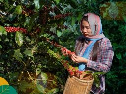

ABOUT US

Kopi merupakan minuman yang diseduh dengan biji kopi yang sudah disangrai dan dihaluskan. Berwarna gelap, pahit, dan sedikit asam, kopi memiliki efek stimulan pada manusia, terutama karena kandungan kafein-nya.
Berangkat dari kecintaan yang mendalam terhadap budaya ngopi di Indonesia, kami mendirikan platform ini sebagai wadah bagi para penikmat, petani, dan peracik kopi. Kami bekerja sama langsung dengan para petani lokal untuk memastikan setiap biji kopi yang kami pilih dipetik dalam kondisi matang sempurna (red cherry) dan diproses secara higienis. XHTML & CSS.

Berangkat dari kecintaan yang mendalam terhadap budaya ngopi di Indonesia, kami mendirikan platform ini sebagai wadah bagi para penikmat, petani, dan peracik kopi. Kami bekerja sama langsung dengan para petani lokal untuk memastikan setiap biji kopi yang kami pilih dipetik dalam kondisi matang sempurna (red cherry) dan diproses secara higienis.
Kami percaya bahwa di balik setiap cita rasa kopi yang luar biasa, terdapat komitmen untuk menjaga keseimbangan alam dan keberlanjutan lingkungan. Oleh karena itu, kami tidak hanya fokus pada kualitas produk, tetapi juga aktif mengedukasi masyarakat mengenai pentingnya praktik pertanian ramah lingkungan. Dengan menyatukan tradisi leluhur dalam menanam kopi dan teknologi modern dalam proses pengolahan, kami berusaha menciptakan ekosistem industri kopi yang sehat, adil, dan menguntungkan bagi semua pihak yang terlibat.
- Pilihan Terbaik: Menjaga kualitas rasa dari hulu ke hilir.
- Edukasi Berkelanjutan: Berbagi ilmu gratis seputar dunia kopi.
- Pemberdayaan Petani: Mendukung perdagangan adil (fair trade) demi kesejahteraan petani lokal.
- Inovasi Rasa: Terus mengeksplorasi teknik roasting untuk memunculkan karakter unik tiap biji kopi.
- Ramah Lingkungan: Menerapkan metode penanaman organik yang menjaga kelestarian ekosistem.
- Transparansi Produk: Menjamin keterbukaan informasi asal-usul biji kopi (traceability).
- Kualitas Konsisten: Kontrol standar yang ketat pada setiap proses penyangraian (roasting).
- Komunitas Inklusif: Menjadi ruang kolaborasi bagi barista, pelaku bisnis, dan pencinta kopi.